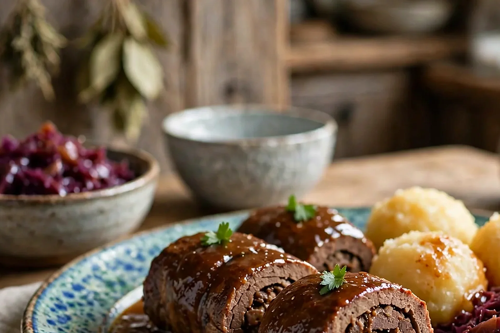

Rinderrouladen – der Sonntags-Klassiker mit würziger Füllung
Wenn Rinderrouladen im Topf schmoren, duftet das ganze Haus nach Sonntag. Gefüllt mit Senf, Speck, Zwiebel und Gewürzgurke und langsam in einer kräftigen Soße gegart, werden sie butterzart. Ein Festessen, das bei Gästen immer gut ankommt – und sich wunderbar vorbereiten lässt.

Inhaltsverzeichnis
Zutaten
Zubereitung
- Die Rouladen auf der Arbeitsfläche ausbreiten, trocken tupfen und von beiden Seiten mit Salz und Pfeffer würzen. Die Innenseiten dünn mit je 1 TL Senf bestreichen.
- Jede Roulade mit 2 Scheiben Speck belegen. Zwiebelstreifen und Gurkenstifte am schmalen Ende verteilen, die Längsseiten einschlagen und die Rouladen fest aufrollen. Mit Küchengarn oder Rouladennadeln fixieren.
- Das Öl in einem Bräter stark erhitzen und die Rouladen rundherum kräftig anbraten. Herausnehmen und beiseitestellen.
- Möhre, Sellerie und die restlichen Zwiebeln im Bratensatz anrösten. Tomatenmark dazugeben und kurz mitrösten, dann mit Rotwein ablöschen und fast vollständig einkochen lassen.
- Die Brühe angießen, das Lorbeerblatt dazugeben und die Rouladen wieder in den Bräter legen. Zugedeckt bei kleiner Hitze ca. 2 Stunden schmoren, dabei die Rouladen einmal wenden.
- Die Rouladen herausnehmen und warm halten. Die Soße durch ein Sieb gießen, aufkochen und mit der angerührten Speisestärke leicht binden. Mit Salz und Pfeffer abschmecken.
- Garn oder Nadeln entfernen, die Rouladen mit der Soße servieren. Dazu passen Rotkohl und Kartoffelklöße oder Salzkartoffeln.

Tipp
Rouladen schmecken aufgewärmt am nächsten Tag fast noch besser – ideal, wenn Gäste kommen und du entspannt servieren möchtest. Das Fleisch dafür am besten schon in der Soße ziehen lassen.
📌 Mehr Rezept-Ideen findest du auf unserem Pinterest-Profil:
Lecker Rezepte auf Pinterest
Lecker Rezepte auf Pinterest